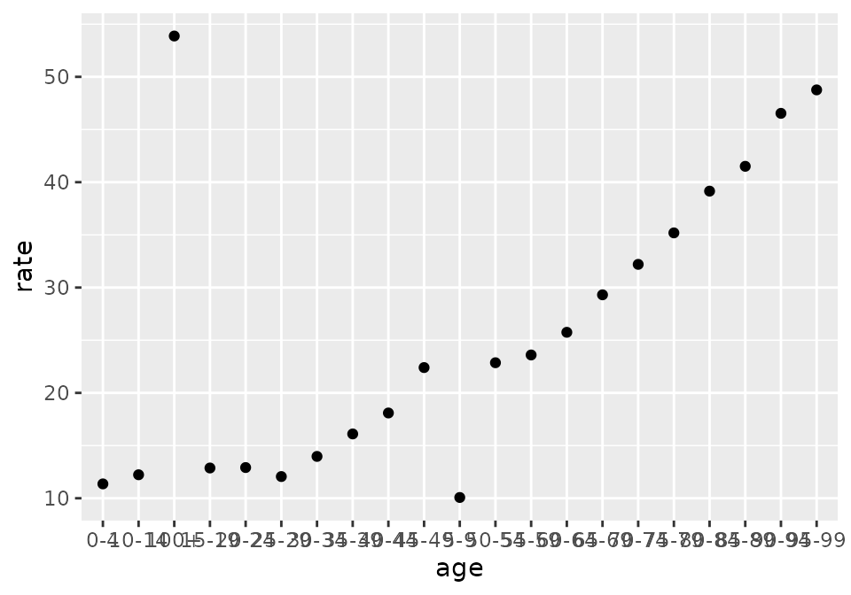
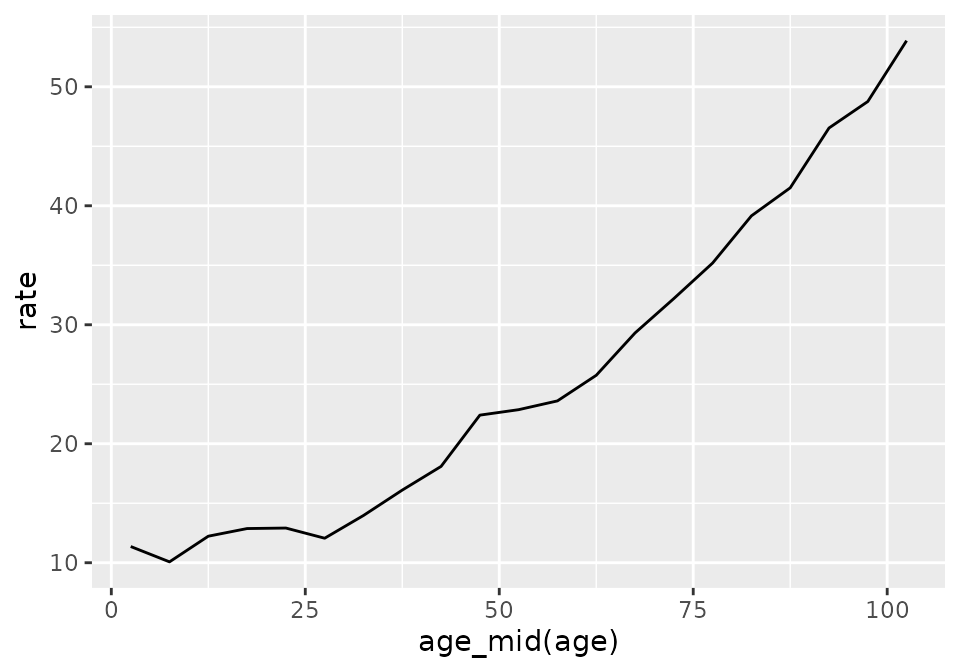

This vignette provides recipes for common tasks involving age group,
period, and cohort labels. Each recipe describes a problem and gives a
solution. For an overview of the agetime package, see Get started.
Create and modify labels
Create labels from scratch
Solution
For labels with regular widths, use functions such as
age_labels_ten() or period_labels_five().
age_labels_ten()
#> [1] "0-9" "10-19" "20-29" "30-39" "40-49" "50-59" "60-69" "70-79" "80-89"
#> [10] "90-99" "100+"
period_labels_five(
lower_first = 2001,
lower_last = 2031
)
#> [1] "2001-2006" "2006-2011" "2011-2016" "2016-2021" "2021-2026" "2026-2031"
#> [7] "2031-2036"For labels with irregular widths, use age_labels(),
period_labels(), or cohort_labels(), and
specify the breaks.
age_labels(
breaks = c(0, 20, 65, 100)
)
#> [1] "0-19" "20-64" "65-99" "100+"
cohort_labels(
breaks = c(2000, 2010, 2030),
open_left = TRUE
)
#> [1] "<2000" "2000-2010" "2010-2030"Discussion
There is no universally accepted set of conventions on how age,
period, and cohort labels should be formatted. agetime
tries to reflect common practices in demography and official
statistics.
See Also
- The help pages for
age_labels(),period_labels(), andcohort_labels()describeagetimeformatting rules
Standardize labels
Problem
Your age, period, or cohort labels come in a mix of formats, such as
"5to9", "10--14", and "100plus",
and you want them all in one consistent format.
Solution
Use age_standard(), period_standard(), or
cohort_standard().
df <- tibble(
age = c("5to9", "10--14", "100plus", "infants"),
count = c(11, 9, 2, 22)
)
df |>
mutate(age = age_standard(age))
#> # A tibble: 4 × 2
#> age count
#> <chr> <dbl>
#> 1 5-9 11
#> 2 10-14 9
#> 3 100+ 2
#> 4 0 22The standard functions recognize the formats commonly
found in published tables, including totals and not-stated
categories.
age_standard(c("All ages", "Under 1", "1-4 years", "Age 5 to 9",
"10-14yrs", "85 years and over", "Not stated"))
#> [1] "Total" "0" "1-4" "5-9" "10-14" "85+" NADiscussion
If the labels argument is a factor, then the
standard functions standardize the factor levels along with
the values.
Not-stated categories become NA. To remove them, see Drop “Not stated” categories from a
dataset.
See Also
- The help pages for
age_standard(),period_standard(), andcohort_standard()describeagetimeformatting rules
Convert lower limits to age group labels
Problem
Your data store age groups as numbers, such as 0,
5, 10, …, 85, where each number
is the lower limit of a five-year age group, and 85 is the
lower limit of an open age group. You want age group labels such as
"0-4" and "85+".
Solution
Treat the numbers as single years, coarsen them to five-year groups, and then make the last group open.
age <- c(0, 5, 10, 80, 85)
age |>
age_coarsen_five() |>
age_set_open_right(at = 85)
#> [1] 0-4 5-9 10-14 80-84 85+
#> Levels: 0-4 5-9 10-14 80-84 85+For life-table age groups, where the numbers are 0,
1, 5, 10, …, use
age_coarsen_life() in place of
age_coarsen_five().
Discussion
agetime reads a number on its own as a single year of
age. Without coarsening, 5 is the interval from age 5 up to
age 6, not up to age 10.
age_interval(age)
#> [1] "[0, 1)" "[5, 6)" "[10, 11)" "[80, 81)" "[85, 86)"Adopt coarser age groups from another age variable
Problem
You have two age variables, and you want to switch the finer one to the coarser age groups used by the other.
Solution
Use age_coarsen_to().
Discussion
Every age group in labels must lie inside exactly one
age group in to. Otherwise age_coarsen_to()
throws an error, which distinguishes two problems:
- an age group would be split when it overlaps two or more
age groups in
to, as"5-9"overlaps"0-6"and"7-14"; - an age group is not fully covered when part of it lies
outside all the age groups in
to, as"20"lies above"7-14".
age_coarsen_to(c("0-4", "5-9", "20"), to = c("0-6", "7-14"))
#> Error in `age_coarsen_to()`:
#> ! Can't coarsen age groups.
#> ✖ Age group "5-9" would be split by the labels in `to`.
#> ℹ "5-9" overlaps "0-6" and "7-14".
#> ✖ Age group "20" is not fully covered by the labels in `to`.
#> ℹ Add labels to `to` that cover it?Create labels for a forecast
Problem
You have labels for past periods, and you need labels for future periods, for use in a forecast.
Solution
Use period_extend().
recent <- c("2020-2025", "2025-2030")
period_extend(recent, n = 2)
#> [1] "2020-2025" "2025-2030" "2030-2035" "2035-2040"See Also
-
age_extend()extends age groups andcohort_extend()extends cohorts.
Specify an open-ended age group, period, or cohort
Problem
You want an open interval at one end of your labels, with a limit specified by you. The labels might already have an open interval with a different limit, or they might not have one at all.
An open interval is one that has no lower limit
(e.g. "<2000") or no upper limit
(e.g. "85+").
Solution
Use
-
age_set_open_right(), -
period_set_open_left(), -
period_set_open_right(), -
cohort_set_open_left(), or -
cohort_set_open_right().
labels_age <- c("0-4", "60-64", "90+")
age_set_open_right(labels_age, at = 80)
#> [1] 0-4 60-64 80+
#> Levels: 0-4 60-64 80+Discussion
The set_open functions always return factors. If you
would prefer a character vector, call as.character() on the
result,
labels_age |>
age_set_open_right(at = 80) |>
as.character()
#> [1] "0-4" "60-64" "80+"Create an age variable that sorts properly
Problem
Raw age group labels sort in alphabetical order:
df <- tibble(
age = c("10-14", "0-4", "5-9"),
count = c(33, 7, 15)
)
df |>
arrange(age) ## "10-14" comes before "5-9"!!
#> # A tibble: 3 × 2
#> age count
#> <chr> <dbl>
#> 1 0-4 7
#> 2 10-14 33
#> 3 5-9 15You want an age variable that sorts in age order.
Solution
Function age_set_order() creates a factor with levels in
the right order.
labels_unordered <- c("10-14", "0-4", "5-9")
age_set_order(labels_unordered)
#> [1] 10-14 0-4 5-9
#> Levels: 0-4 5-9 10-14Discussion
If labels is not a factor, age_set_order()
turns it into one.
See Also
- Use
period_set_order()andcohort_set_order()to make period and cohort labels sort in the right order. - Order by age when working interactively
- The
set_open,coarsen, andfillfunctions, like theset_orderfunctions, always return factors
Ensure that all age groups appear in a table
Problem
You are building a table, and you want it to show every age group, including age groups with no observations.
Solution
Generate the full set of labels with
then join the data on to the set.
all_ages <- tibble(
age = age_labels_five(
lower_first = 0,
lower_last = 20,
open_right = FALSE
)
)
observed <- tibble(
age = c("0-4", "10-14"),
n = c(30, 25)
)
all_ages |>
left_join(observed, by = "age")
#> # A tibble: 5 × 2
#> age n
#> <chr> <dbl>
#> 1 0-4 30
#> 2 5-9 NA
#> 3 10-14 25
#> 4 15-19 NA
#> 5 20-24 NAAlternatively, to fill gaps between the age groups in the data, use a
fill function, then complete() from the
tidyr package.
library(tidyr)
observed |>
mutate(age = age_fill_five(age)) |>
complete(age, fill = list(n = 0))
#> # A tibble: 3 × 2
#> age n
#> <fct> <dbl>
#> 1 0-4 30
#> 2 5-9 0
#> 3 10-14 25complete() sorts character vectors alphabetically, so
age needs to be a factor, as it is here.
Discussion
age_labels_life() creates the labels used by an abridged
life table, "0", "1-4", "5-9",
"10-14", …
See Also
- Periods and cohorts have equivalent
labelsfunctions. - The
fillfunctions (e.g.age_fill_five()) add intermediate levels to a factor. - Create an age variable that sorts properly
- Include levels that don’t appear in the data
Check labels
Check for gaps, overlaps, and other problems
Problem
You want to check that a set of labels meets your expectations, such as having no gaps, and either report any problems or stop a pipeline.
Solution
Use the diagnose_values functions for diagnostics. Use
the assert_values functions to throw an error as soon as a
condition is violated.
lab <- c("2020-2025", "2025-2030", "2030-2035")
period_diagnose_values(lab, no_gap = TRUE, no_overlap = TRUE)
#> $ok
#> [1] TRUE
#>
#> $details
#> # A tibble: 2 × 3
#> condition passed comment
#> <chr> <lgl> <chr>
#> 1 no_overlap TRUE NA
#> 2 no_gap TRUE NA
pop <- tibble(
age = c("0-4", "5-9", "10-14"),
count = c(100, 110, 105)
)
pop |>
mutate(age = age_assert_values(age, has_zero = TRUE, no_gap = TRUE))
#> # A tibble: 3 × 2
#> age count
#> <chr> <dbl>
#> 1 0-4 100
#> 2 5-9 110
#> 3 10-14 105Discussion
The diagnose functions return a list with an
ok flag and details.
The assert functions return their input invisibly when
checks pass. Returning their inputs allows them to be used in
pipelines.
The values functions treat each element of
labels as a separate group, so a label that appears more
than once counts as overlapping.
See Also
-
?age_diagnose_levels,?period_diagnose_levels, or?cohort_diagnose_levelsfor the full set of conditions - Check labels within groups of a data frame
- Check the levels of a factor
Check labels within groups of a data frame
Problem
Your data frame has one row for each combination of age group and another variable, such as sex, and you want to check the age groups for each sex. Checking the whole column fails, because each age group appears more than once.
df <- tibble(
age = c("0-4", "5-9", "0-4", "5-9"),
sex = c("F", "F", "M", "M"),
count = c(51, 49, 53, 50)
)
df |>
mutate(age = age_assert_values(age, no_overlap = TRUE))
#> Error in `mutate()`:
#> ℹ In argument: `age = age_assert_values(age, no_overlap = TRUE)`.
#> Caused by error in `age_assert_values()`:
#> ! Age group labels fail check `no_overlap`.
#> ✖ `no_overlap`: Example of overlap among values: '0-4' appears 2 times. To
#> allow repeats, such as one per sex, check within groups, for instance using
#> dplyr::group_by().Solution
Group the data first, for instance using group_by().
df |>
group_by(sex) |>
mutate(age = age_assert_values(age, no_overlap = TRUE, has_zero = TRUE))
#> # A tibble: 4 × 3
#> # Groups: sex [2]
#> age sex count
#> <chr> <chr> <dbl>
#> 1 0-4 F 51
#> 2 5-9 F 49
#> 3 0-4 M 53
#> 4 5-9 M 50Check the levels of a factor
Problem
Your labels are a factor, and you want to check the levels, including levels that do not appear in the data.
Solution
Use the diagnose_levels and assert_levels
functions.
age <- factor(
c("0-4", "0-4", "5-9"),
levels = c("0-4", "5-9", "10+")
)
age_diagnose_levels(age, no_overlap = TRUE, has_open_right = TRUE)
#> $ok
#> [1] TRUE
#>
#> $details
#> # A tibble: 2 × 3
#> condition passed comment
#> <chr> <lgl> <chr>
#> 1 no_overlap TRUE NA
#> 2 has_open_right TRUE NA
age_diagnose_values(age, no_overlap = TRUE, has_open_right = TRUE)
#> $ok
#> [1] FALSE
#>
#> $details
#> # A tibble: 2 × 3
#> condition passed comment
#> <chr> <lgl> <chr>
#> 1 no_overlap FALSE Example of overlap among values: '0-4' appears 2 times.…
#> 2 has_open_right FALSE Highest interval among values: '5-9'See the intervals implied by a set of labels
Problem
You are not sure how agetime is interpreting a set of
labels. For instance, does "2020" refer to the year
starting in 2020 or the year ending in 2020, and does
"2020-2024" include 2024?
Solution
Use the interval functions, which describe each label
using interval notation.
age_interval(c("0", "1-4", "5-9", "100+"))
#> [1] "[0, 1)" "[1, 5)" "[5, 10)" "[100, Inf)"
period_interval(c("2018", "2019", "2020-2025"))
#> [1] "[2018, 2019)" "[2019, 2020)" "[2020, 2025)"To see how the interpretation changes, vary
interpret_single and interpret_multi.
## years running from 1 July to 30 June, with
## labels giving the year in which they end
period_interval(c("2019", "2020"), interpret_single = "upper")
#> [1] "[2018, 2019)" "[2019, 2020)"
## second number in "2020-2024" is the last year
## in the interval, rather than the upper limit
cohort_interval(c("2015-2019", "2020-2024"), interpret_multi = "below_upper")
#> [1] "[2015, 2020)" "[2020, 2025)"Discussion
In interval notation, a square bracket means that the interval
includes the limit, and a round bracket means that the interval excludes
it. Age "5-9", for instance, is "[5, 10)",
which includes people who have reached their 5th birthday but not their
10th. The limit of an open interval is written -Inf or
Inf, as in "[100, Inf)".
The interval functions return descriptions of labels,
not labels, and other agetime functions cannot read
them.
See Also
-
?age_interval,?period_interval, and?cohort_interval - The
lower,upper,width, andmidfunctions (e.g.period_lower()) return the limits, widths, and midpoints of intervals as numbers - Check for gaps, overlaps, and other problems
Analyse data
Filter rows by age, period, or cohort
Problem
You want to keep rows from your dataset for certain ages, periods, or cohorts, and discard the rest. But the age, period, and cohort labels are strings, so you can’t compare them with numbers.
Solution
Filter on lower or upper limits.
df <- tibble(
age = c("0-14", "15-64", "65+", "Total"),
period = c("2017", "2033", "2050+", "2020-2030"),
count = c(100, 200, 50, 350)
)
df |>
filter(age_lower(age) >= 15)
#> # A tibble: 2 × 3
#> age period count
#> <chr> <chr> <dbl>
#> 1 15-64 2033 200
#> 2 65+ 2050+ 50
df |>
filter(period_upper(period) <= 2030)
#> # A tibble: 2 × 3
#> age period count
#> <chr> <chr> <dbl>
#> 1 0-14 2017 100
#> 2 Total 2020-2030 350Drop totals from a dataset
Solution
Use age_is_total(), period_is_total(), or
cohort_is_total() to identify rows with totals, and then
filter.
df <- tibble(
age = c("0-14", "15-64", "65+", "All"),
count = c(10, 20, 5, 35)
)
df |>
filter(!age_is_total(age))
#> # A tibble: 3 × 2
#> age count
#> <chr> <dbl>
#> 1 0-14 10
#> 2 15-64 20
#> 3 65+ 5Discussion
age_is_total(), period_is_total(), and
cohort_is_total() recognize synonyms for totals
(e.g. "all") and ignore case
(e.g. "tOTaL").
Drop “Not stated” categories from a dataset
Problem
Your dataset includes rows where age, period, or cohort is not stated or missing, and you want to remove them.
Solution
Use age_is_missing(), period_is_missing(),
or cohort_is_missing() to identify rows with not stated or
missing and then filter.
df <- tibble(
time = c("2005", "unknown", "2005-2010", NA),
count = c(100, 2, 55, 12)
)
df |>
filter(!period_is_missing(time))
#> # A tibble: 2 × 2
#> time count
#> <chr> <dbl>
#> 1 2005 100
#> 2 2005-2010 55Discussion
age_is_missing(), period_is_missing(), and
cohort_is_missing() look for NAs, but also for
text equivalents, such as "Not stated",
"Don't know" or "n/a".
Order by age when working interactively
Problem
You are exploring a dataset interactively, and you want to sort on age, but the age labels are sorted in alphabetical order.
Discussion
If you want the variable itself to sort in age order, use
age_set_order(), period_set_order(), or
cohort_set_order(). See Create an age variable that sorts
properly.
Include levels that don’t appear in the data
Problem
Some age groups, periods, or cohorts don’t appear in your data, but you want them to appear in tabulations.
Solution
Use one of the fill functions such as
age_fill_five().
Discussion
The fill functions change the levels of
labels, not the values. If labels is not a
factor, the fill functions turn it into one.
Tidyverse functions such as count() and
summarise() drop unused levels by default. If
.drop = FALSE is not included in the call to
count(), then the extra level added by
age_fill_five() does not appear in the results,
df |>
mutate(age = age_fill_five(age)) |>
count(age, wt = respondents)
#> # A tibble: 2 × 2
#> age n
#> <fct> <dbl>
#> 1 0-4 15
#> 2 10-14 20See Also
- The full set of
fillfunctions:
-
age_set_order(),period_set_order(),cohort_set_order()put levels in the right order.
Aggregate to broader age groups
Solution
Convert to coarser labels, then aggregate.
deaths <- tibble(
age = c("0", "1", "2", "5", "6", "10", "11"),
n = c(3, 1, 2, 4, 5, 6, 7)
)
deaths
#> # A tibble: 7 × 2
#> age n
#> <chr> <dbl>
#> 1 0 3
#> 2 1 1
#> 3 2 2
#> 4 5 4
#> 5 6 5
#> 6 10 6
#> 7 11 7
deaths |>
mutate(age = age_coarsen_five(age)) |>
count(age, wt = n)
#> # A tibble: 3 × 2
#> age n
#> <fct> <dbl>
#> 1 0-4 6
#> 2 5-9 9
#> 3 10-14 13Discussion
For irregular age groups, use age_coarsen(). To borrow
categories from another set of labels, use
age_coarsen_to(). To aggregate to (abridged) life-table
ages, use age_coarsen_life().
Build a mapping between age groups
Problem
You have two age classifications, and you want a lookup table showing how the age groups in one classification relate to the age groups in the other.
Solution
Use age_mapping().
classif_fine <- age_labels_ten(lower_last = 60)
classif_broad <- age_labels(breaks = c(0, 20, 60), open_right = TRUE)
age_mapping(
labels_x = classif_fine,
labels_y = classif_broad,
relation = "is_contained_in"
)
#> # A tibble: 7 × 2
#> x y
#> <chr> <chr>
#> 1 0-9 0-19
#> 2 10-19 0-19
#> 3 20-29 20-59
#> 4 30-39 20-59
#> 5 40-49 20-59
#> 6 50-59 20-59
#> 7 60+ 60+Discussion
Other possible values for relation are
"equals", "contains", and
"overlaps_with".
To represent the mapping as a matrix rather than a data frame, set
format to "matrix",
age_mapping(
labels_x = classif_fine,
labels_y = classif_broad,
relation = "is_contained_in",
format = "matrix"
)
#> y
#> x 0-19 20-59 60+
#> 0-9 1 0 0
#> 10-19 1 0 0
#> 20-29 0 1 0
#> 30-39 0 1 0
#> 40-49 0 1 0
#> 50-59 0 1 0
#> 60+ 0 0 1Use age, period, or cohort on the x-axis of a plot
Problem
You want to construct a plot with age, period, or cohort on the x-axis. But plots that use non-numeric age, period, or cohort labels on the x-axis often look terrible, and get categories in the wrong order.
df <- tibble(
age = age_labels_five(),
rate = 10 + 0.1 * (1:21)^2 + rnorm(21)
)
ggplot(df, aes(x = age, y = rate)) +
geom_point()
Solution
Convert age, period, or cohort to a continuous variable by using
age_mid(), period_mid(), or
cohort_mid().

Calculate annual rates
Solution
Use period_width().
df <- tibble(
period = c("2010-2020", "2020-2023", "2023-2030"),
departures = c(2000, 50, 3000)
)
df |>
mutate(
n_year = period_width(period),
annual_rate = departures / n_year
)
#> # A tibble: 3 × 4
#> period departures n_year annual_rate
#> <chr> <dbl> <dbl> <dbl>
#> 1 2010-2020 2000 10 200
#> 2 2020-2023 50 3 16.7
#> 3 2023-2030 3000 7 429.More information
- Get started for a quick start
- Troubleshooting for solutions to common problems